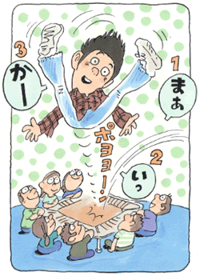

社会恐怖1
いじめや家庭問題から悩み、神経症を発症して
（いじめ、対人恐怖、視線恐怖、他）
村田 弘司（仮名）20歳・大学生
繊細で神経質な性格から、いじめ、対人恐怖、視線恐怖など神経症を発症
私は母親と兄と祖父と祖母の五人で生活していました。父は小さい頃に母と離婚していました。母親は優しくとてもまじめな人でしたが、祖父は短気で母親をよく怒っていて、僕も怒られるのでは、と心配する神経質な毎日をおくっていました。しかし祖父は何故か、僕には優しく、高級な食事や買い物、旅行等に連れて行ってくれ、お金の面ですごく心が広かった祖父だったと思います。祖母もすごくやさしく陽気でいつも笑顔で微笑んでくれ、私は祖母が大好きでした。だから私はおばあちゃん子で、小さい頃は祖母の動きなどを観察しては、よく祖母の真似をするというおかしなこともしていました。祖母は宝くじなどを買って「あたらんかなぁ」と常に言っていました。お金がほしいにもかかわらず僕にすぐ「お金あげるわ」と僕にはお金をくれました。兄とは小さい頃からほとんど話しをしませんでした。
小学校の時は明るく活発で通知表ではクラスの中心存在と評価されていて、母親を喜ばせていました。しかしその半面で、私自身すごく恥ずかしがり屋で、特に女性とはまともに話せないと言う状態でした。また私は物事をよく気にするので友達に対する言動で相手が『自殺するんじゃないか？』と思って眠れない日もあったりして、すごく繊細で神経質な性格でもありました。中学校の時は興味本位でタバコをすったり、悪い友達とも付き合ったりと、母親が何度も学校に呼び出されたりする等、親不孝もしてしまいました。そして高校に入り友達を作ろうと張り切っていたのですがあるトラブルが原因で、その頃の不良グループに目をつけられ、気の小さな私は、『リンチにされるんじゃないか』とすごく脅えていました。高校二年になると、いじめられるのが怖いため、進学クラスに入りました。進学クラスは人数がとても少なくホッとし、今度はうまくいくと思ったのですが、逆に緊張してクラスに溶け込めなくなりました。またトイレも近くなり、授業が終わるたびにトイレに駆け込んでいました。クラスでは、緊張してうまく話せないので常に空元気でした。また授業中は極度の緊張から非常に汗をかき苦労しました。そしてあるときノートを取ろうと黒板を見た時ふっととなりの子が視界に入り、それ以来それにとらわれるようになり、相手がこっちに気づくのではないかと思い顔をあげることができなくなりました。そして『自分の視線によって相手が傷つく』という罪悪感にとらわれました。
病院、薬、そして森田療法
こんな状態がいつまでも続くので、母に相談しました。この時初めて、今まで自分だけで抱えていた悩みを人に言った瞬間、大粒の涙が出てきました。そして母と一緒に病院の神経科へ行きました。その時の私は、『薬を飲めば治るんや』と思い、希望を持って薬を飲んでいたのですが、眠たくなるばかりで全然よくなりませんでした。母は「もう飲むのやめとき」というのですが、あきらめの悪い私は薬を飲み続けたのです。そして、途中から森田療法を知り、これは病気じゃないと書かれていた事を初めて知った時には本当に安心しました。しかし症状は治まりませんでした。それでもなんとか高校を卒業し、大学にも合格しました。
そんな精神的に不安定の中、今度は大好きだった祖母がアルツハイマーになってしまいました。たまにお見舞いに行くと「あんただれ？」と言われ本当にショックでした。それでも最近は回復してきてたまに私の名前を呼んでくれるのでとてもうれしいです。しかし私の症状の方は悪化するばかりで本当にどん底でした。野球遠征で地方の学校に行って帰ってきた友達から「おまえどおしてん、ほんま暗なったなぁ！」と言われたときは本当に地震や津波でも起きて死なせてくれという思いでした。そんなわけで、私は大学に入学にしても早速孤立していきました。クラスに入るのが苦痛で大学をいくふりをして、ゲームセンター等自分の世界だけに閉じこもって行きました。アルバイトも行ってはすぐやめての繰り返しでした。
そんな中、ある日、インターネットで生活の発見会（神経症の自助グループ）の存在を知り、いろいろなアドバイスをもらい、心が少し楽になりました。しかしその頃から母親は胸などが痛いといって寝込んだりしていました。病院で検査を受けると私達が全く予想だにしていなかった『癌』でした。この時、本当に目の前が真っ暗になり心拍数があがったのを憶えています。そして母親が入院しました。母には違う病気だといって黙っていました。それから毎日朝方まで母に付き添い、その後アルバイトに行くという生活でした。それでも母は私に気を使い「はよ帰り」という言葉がとても悲しかったです。親不孝ばかりして何も親孝行できなかった自分を責め続けました。そんな折、夜中に急に母が『死んだひいばあちゃんの顔が見える』と言い出し、その時から母の死を覚悟しました。そして次の日母は亡くなり、まるでドラマの医師から放たれる言葉と同じようなことを言われた瞬間、私はその場で泣き崩れてしまいました。この日から、私には何の希望もなくなり、『死んだらどうなるのか？』と、そんなことばかり考えるようになりました。そしてその後、これまで全く話しをしていなかった兄と大喧嘩をして、手を三針も縫うという大怪我をしてしまいました。祖父が止めてくれたのですが、祖父がいなかったらと思うと今でもぞっとします。どちらかが一方的に悪いということはありえないので私から詫びました。しかし兄は許してくれず、それ以来、冷ややかな目でこちらを見てまともに話しをしてくれません。

こうして家の中は荒んでいきましたが、まだ神は私を見放しませんでした。一筋の希望が見え始めたのです。それはMさん（当財団職員）との出会いでした。今まで僕は理論ばかりにとらわれ、人と接するときも理論を当てはめて人と接するというおかしなことをしていましたが、Mさんから「君もっと自由でいいよ、病気じゃないという観点だけ押さえていれば後は君の自由だよ」と言われました。そしてその後、彼の勧めでメンタルヘルス財団のインターネット掲示板である、体験フォーラムに入会しました。24時間非公開で行われている掲示板で仲間と出会ました。そこで会員の皆さんは、自分を暖かく受け入れてくださいました。それから僕はいい意味での自由になろうと努力しました。そしたら今まで苦痛に感じていた症状が「まぁ、いっか」って思えるようになりました。
一方、家庭では、祖母が入退院を繰り返し、母の数ヶ月後に後を追うように亡くなりました。何でこんな不幸が続くのかと神を疑いました。そしてさらに兄と衝突し、何も考えれなくなり家の中をめちゃくちゃにし「もう兄との生活は耐えられない」と家を飛び出しました。その後、叔父とMさんに相談し、結局一人暮らしをする事になりました。その際にはMさんをはじめ、いろいろな方の親切やお世話になった事は非常に感謝に耐えません。そして生活の発見会、並びにメンタルヘルス財団などを通じて知った、森田療法とその仲間との出会い。・・・『私は一人じゃないんだ！』と人生が開けてきたのです。今では症状はあまり問題ではなくなってきています。なにより人は支えあって生きていることに気が付き、これからは私も人の為に社会の為に少しでも役に立ちたいと思います。このような心境にしていただいたのはMさんや生活の発見会、インターネットで知り合えた仲間のおかげです。昔の自分はもっと明るくこんな自分ではないと思っていたのですが、今では昔もこんな感じだったのかなって思っています。やはり一番大事なのは客観的に自分をどう思うか、どう見るかにかかっていると思います。